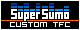

|
||||||||||||||||||||||||||||||||||||


| Link To Me! | |
|  | A little button I made if people want to put it on their site and link to me. :) |
| Custom TFC | |
| Custom TFC | Probably the best custom TFC site out there. It has everything. |
| Dodgeh | Some nice shells by Dodgeh. |
| Dragline | Awesome stuff on this site. His models are some of the best. |
| Enterlaust | Some crosshairs and console backgrounds. |
| FriedBunny | A good site with lots of good customizations. |
| Giglio | Another good site with good stuff. |
| TehFreak | Yet another good site with good stuff. |
| General TFC | |
| A TFC clan I've been in for over 3 years. I made the page. | |
| A really good TFC news site. The center of the clanning community. | |
| Konspiracy | A page much like the Catacombs. Has the KSE Stock Exchange. |
| Another good TFC news site, they bring TFC to the masses. | |